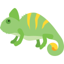

翻翻吧設定
把常用設定分組管理，需要調整時切換左側分類即可。
模型與 API Key
選擇預設模型後，只需要確認對應供應商的 API Key 已設定；其他 Key 可保留作為備援。
| 功能 | 模型 |
|---|---|
預設「跟隨主模型」；結果卡底部「僅本次」選的模型優先於這裡。全文翻譯由右側懸浮球啟動，建議選擇速度快、額度充足的模型，也可以用瀏覽器內建翻譯（不需金鑰）。
Groq
推薦
至 Groq Console 免費取得，格式為 gsk_ 開頭。
Gemini
備用
至 Google AI Studio 取得，格式為 AIza 開頭。
OpenRouter
進階
至 OpenRouter 取得，格式為 sk-or- 開頭。
自訂端點 新增
OpenAI 相容
只接受 https://。儲存時瀏覽器會詢問是否允許連線到這個網域；選取文字會送到你填的端點處理。
語言與朗讀
集中管理翻譯輸出、解釋文字與單字卡朗讀偏好。
影響翻譯、單字卡釋義與例句翻譯；預設為繁體中文。
解釋模式與優化改動說明使用此語言；建議跟隨翻譯語言。
單字卡預設依 AI 偵測的原文語言朗讀，也可改為跟隨翻譯語言。
開啟後會在文章可見文字中淡標已收藏單字；不標示按鈕、表單、程式碼與翻翻吧介面。
至 Google Cloud Console 建立並啟用 Cloud Text-to-Speech API。留空則使用瀏覽器內建語音。
自訂動作
除了翻譯、解釋、優化，可以自己寫 prompt 做新的動作，指定模型回傳哪些欄位、用哪種版面顯示。
內建動作可以停用、調整順序，不能刪除或改 prompt；按「以此為範本」會建立一份可編輯的自訂動作。「用 AI 協助設定」只會把說明文字複製到剪貼簿，貼給任何 AI 請它幫你寫，不會呼叫任何 API。
術語表
指定固定譯法，例如 lead time 一律翻成「前置時間」。翻譯時只把這段文字裡實際出現的術語附給模型。
| 原文 | 譯文 | 備註（選填） | 刪除 |
|---|
比對不分大小寫，英文只認完整的詞（art 不會比到 start）。CSV 欄位依序是 source、target、note；匯入會接在現有清單後面，原文重複時保留先前那筆。
填 example.com 也包含它的子網域。網址只在本機比對，不會送給模型。
只套用在「翻譯」與全文翻譯；解釋、優化、長難句分析與自訂動作不套用。瀏覽器內建翻譯不套用術語表（它不接受額外指示）。修改後請按「儲存設定」。
Obsidian 存入
設定 Vault 與預設資料夾後，結果卡可直接把查詢結果整理進筆記。
留空則使用目前開啟的 Vault。
設定後會依照此資料夾階層寫入，不會自動追加子資料夾。
- 存入功能使用 Advanced URI 插件。
- 每週結果存入
資料夾/YYYY-W##.md，按週自動建檔。 - 若資料夾留空，第一次手動存入後會自動記住。
備份與還原
匯出目前設定成 JSON 檔，重新安裝或換裝置後可直接匯入還原。
預設只匯出模型、語言、Obsidian 等一般設定與術語表；勾選 API Keys 時會用此密碼加密，忘記密碼就無法還原 API Key。
只接受翻翻吧設定檔，匯入時會依白名單更新支援的設定與 API Keys。設定檔也會帶上「自訂動作」的清單，匯入時整份取代目前的清單（雲端同步不含自訂動作）。
本機自動快照：每天最多留一份、共兩份（約可回到 24–48 小時前），逾 30 天自動清除。還原採合併，只補回缺少的單字，不會蓋掉快照之後的新增與複習進度。快照只存在這台裝置的瀏覽器，不上傳雲端，不能取代 JSON 匯出。
完整備份請用 JSON（含遇到次數、來源、熟悉度），換裝置 / 重新安裝後可匯入。CSV 適合用 Excel / Google Sheets 檢視與整理，不作為還原格式。匯入採合併：同一單字保留較高的遇到次數，不會覆蓋既有資料。單字本存在本機瀏覽器，建議定期匯出 JSON 備份。
- 不勾選時，匯出檔不包含任何 API Key。
- 勾選後 API Key 會以密碼加密後寫入 JSON；密碼不會被儲存，也無法找回。
- 舊版明文 API Key 備份仍可匯入，但建議重新匯出成加密備份。
雲端同步
同步模型、語言、朗讀與 Obsidian 等一般設定，以及術語表。API Key 不會同步。
上傳會用這台設定覆蓋雲端；下載會用雲端設定覆蓋這台。API Key、單字本與查詢歷史不會同步。
進階設定
只有開發或手動載入 extension 時需要設定；一般使用者不需要處理 Google Cloud。
隱私與功能說明
API Key 與設定保存在本機；這裡保留安全說明與主要使用情境。
- API Key 僅儲存於本機 storage，不會同步到 Chrome 帳號，也不會上傳至任何伺服器。
- 只有本擴充功能可讀取，不對外暴露。
- 可隨時在此頁修改或清空刪除。
- 翻譯 選取單字時顯示詞性、釋義與例句；選取段落時直接翻成目標語言。
- 解釋 根據網頁上下文解釋選取的詞彙或段落含義。
- 優化 重寫選取內容，使表達更清晰流暢。
- 字典卡 例句裡的查詢詞會加粗；英文單字旁標出 CEFR 難度（A1–C2）。 新增
- 快捷鍵 翻譯選取文字（Windows Alt+S、Mac ⌃⇧S）、切換全文翻譯（Windows Alt+A、Mac ⌃⇧A）；右鍵選單也能翻譯選取文字或整頁。按鍵可在擴充功能的快捷鍵頁面更改。 新增
- 結果卡 底部可以「僅本次」換一個模型重查，也可以修改原文後重新查詢（⌘／Ctrl+Enter 送出）。 新增
只在本機累計使用次數，不含任何選取文字、網址或內容，不會上傳，也沒有 telemetry。可隨時清除。